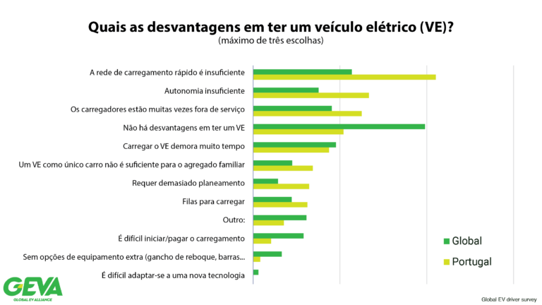
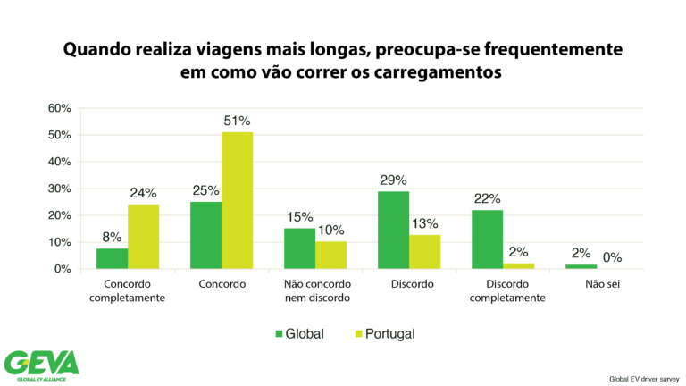
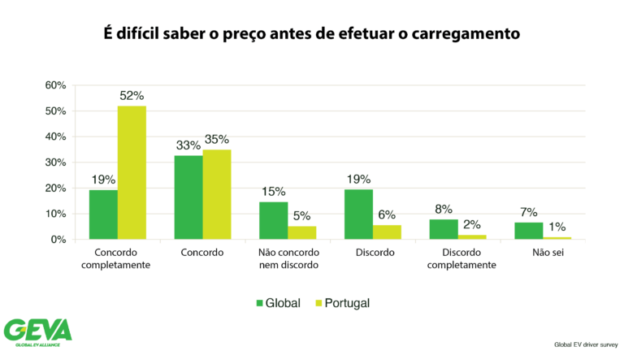
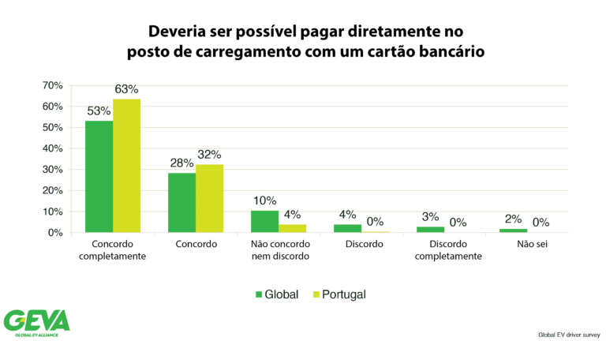
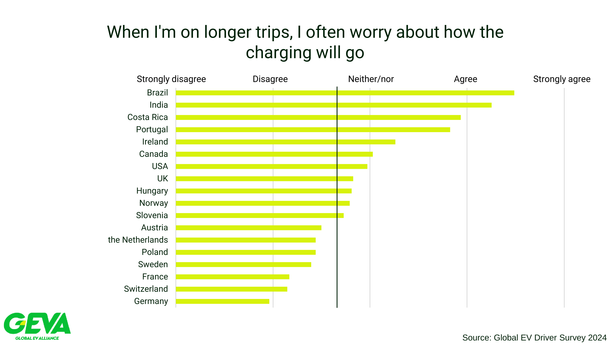
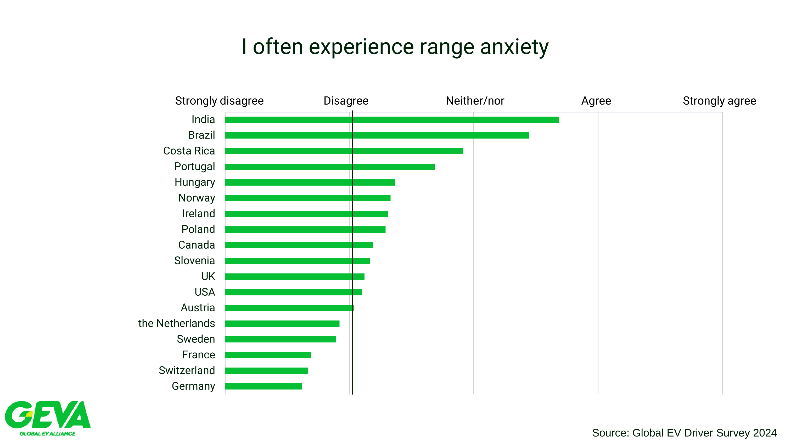
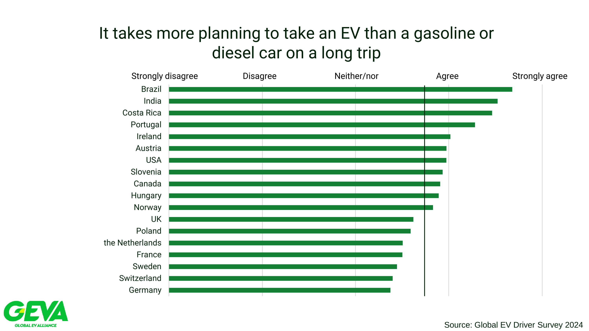

Opinião Pública
Esta secção destaca as opiniões dos utilizadores sobre as suas experiências na rede pública de carregamento em Portugal.
Temos duas fontes de informação sobre a opinião pública:
- Inquérito da AMME de 2024 aos utilizadores de veículos elétricos em Portugal.
- Inquérito da GEVA de 2024 aos utilizadores de veículos elétricos em vários países do mundo, incluindo Portugal.
Ambos os inquéritos recolheram a opinião dos utilizadores sobre a rede de carregamento, sendo que o inquérito da GEVA permite a comparação com outros países. Ambos os inquéritos demonstram que os utilizadores portugueses têm uma opinião negativa sobre a rede de carregamento em Portugal, apesar do modelo de mercado português permitir a interoperabilidade entre diferentes OPCs e CEMEs, e de existirem várias dezenas de CEME em Portugal e mais de uma centena de OPCs.
A AMME pretende demonstrar com estes resultados que uma experiência positiva para o utilizador não é garantida pela interoperabilidade permitida pela EGME. Existem outros fatores que influenciam a experiência do utilizador e que os agentes de mercado não têm tido a iniciativa de resolver, nomeadamente:
- Previsibilidade de preços: Os utilizadores têm dificuldade em prever o preço do carregamento;
- Ativação com cartão bancário: Ambos os inquéritos demonstram que mais de dois terços da população preferem uma solução de pagamento com cartão bancário, que os OPC têm tido dificuldade em implementar e que é obrigatório disponibilizar em todos os postos instalados a partir de abril de 2024;
- Carregadores adequados às necessidades: Especialmente o inquérito da GEVA demonstra que os utilizadores portugueses têm mais dificuldade em encontrar postos disponíveis nos seus percursos, têm mais ansiedade com a autonomia e necessitam de mais planeamento para viagens longas do que a média global.
Praticamente todos os problemas apontados poderem ser resolvidos dentro do quadro legislativo atual e alterações menores. No entanto, o facto é que desde o início da fase comercial da rede pública em 2018, os agentes de mercado não têm tido a iniciativa de resolver estes problemas, o que tem levado a uma insatisfação crescente dos utilizadores com a rede de carregamento em Portugal. Por outro lado, os utilizadores inquiridos no estrangeiro têm uma opinião mais positiva sobre as suas redes de carregamento.
O modelo português serve os utilizadores?
- O modelo de mercado português, com a separação entre o fornecimento de energia e o serviço de carregamento, tem servido os utilizadores de veículos elétricos em Portugal?
- Quem garante uma experiência positiva para o utilizador, quando o utilizador precisa de um serviço completo que é prestado por diferentes agentes de mercado com diferentes motivações?
- Devemos continuar a investir num modelo de mercado que tem demonstrado não ser capaz de garantir uma experiência positiva para o utilizador?
Inquérito AMME 2024
A AMME realizou um inquérito aos utilizadores de veículos elétricos em Portugal em 2024, com os seguintes objetivos:
- Perceber as preferências dos utilizadores de veículos eléctricos em relação ao carregamento fora de casa;
- Perceber a opinião dos utilizadores sobre a rede pública;
- Perceber como o que os utilizadores vêem o AFIR.
A divulgação do inquérito foi feito da seguinte forma:
- Questionário realizado online através do Google Forms;
- Enviado por e-mail para os subscritores de email da AMME;
- Partilhado em redes sociais em vários grupos ligados à mobilidade eléctrica com um pedido para o preenchimento do mesmo;
- Respostas colecionadas durante cerca de 2 semanas, começando a 24 de março de 2024.
Foram recolhidas 539 respostas válidas, que foram analisadas e resumidas no relatório final do inquérito.
Os resultados detalhados estão disponíveis neste link.
Demografias
- Experiência com VE: 50% dos inquiridos afirmaram ter experiência com veículos eléctricos há mais de 3 anos ou mais.
- Associados AMME: 53% dos inquiridos afirmaram ser associados da AMME.
- Utilizadores Intensivos: 17% dos inquiridos afirmaram fazer mais de metade dos seus carregamentos em redes de acesso público.
- Utilizadores MobiE: 57% dos inquiridos afirmaram utilizar maioritariamente postos da rede MobiE.
Preferências no Método de Pagamento
Os utilizadores de veículos eléctricos foram questionados sobre o seu método de ativação preferido nos postos de carregamento, entre as opções de cartão bancário (previsto pelo AFIR), cartão CEME e app CEME. No conjunto de todos os utilizadores, a preferência pelo cartão bancário é clara, com 75% dos inquiridos a preferirem este método, e os restantes 25% as soluções CEME.
pie
title Toda a População
"Cartão Bancário" : 75.0
"Cartão CEME" : 13.0
"App CEME" : 12.0Segmentos de Utilizadores
A preferência pelo multibanco mantém-se muito significante em todos os segmentos de utilizadores; 71% dos não-associados da AMME, também 71% dos utilizadores intensivos da rede pública e 68% dos utilizadores MobiE preferem o multibanco.
Preferências nas Tarifas de Operação (OPC)
Os utilizadores foram questionados sobre qual seria a sua preferência na unidade de tarifação dos postos de carregamento, entre as opções de energia, tempo ou misto. A preferência pela tarifação por energia é clara, com 90% dos inquiridos a preferirem este método, e os restantes 10% as soluções de tempo ou misto. Note-se que a solução proposta pela Associação UVE, de tarifação por unidade de energia durante X minutos e depois por tempo, foi a escolha de menos de 1% dos inquiridos. Note-se também que em janeiro de 2025, 97% das tomadas na rede pública têm pelo menos uma componente de tempo na tarifa, sendo que apenas 3% vão de encontro às expectativas de 90% da população.
pie
title Toda a População
"Em energia (kWh)" : 90.2
"Em energia nos postos lentos e por tempo nos postos rápidos" : 7.2
"Por tempo (minuto)" : 2.2
"Outros" : 0.4Segmentos de Utilizadores
A preferência pela tarifação por energia mantém-se muito significante em todos os segmentos de utilizadores; 89% dos não-associados da AMME, 90% dos utilizadores intensivos da rede pública e 88% dos utilizadores MobiE preferem a tarifação exclusivamente por energia.
Opinião sobre a Estrutura Tarifária
Os utilizadores foram questionados sobre a sua opinião sobre se acham simples de entender a estrutura tarifária dos postos de carregamento, composta por uma tarifa CEME e uma tarifa OPC apresentada no posto de carregamento ou numa aplicação. A opinião de 95% dos utilizadores é de que a estrutura tarifária imposta pelo método comum de pagamento é complexa e difícil de entender.
pie
title Toda a População
"Não" : 95.0
"Sim" : 3.0
"Talvez" : 2.0Segmentos de Utilizadores
A complexidade da estrutura tarifária do método comum de pagamento é também apontada de forma significativa por todos os segmentos da população; 93% dos não-associados da AMME, 94% dos utilizadores intensivos da rede pública e 93% dos utilizadores MobiE.
Outros Resultados
Outros resultados do inquérito incluem:
| Pergunta | População Geral | Não-Associados AMME | Utilizadores Intensivos | Utilizadores MobiE |
|---|---|---|---|---|
| % média de sessões iniciadas com sucesso | 66.9 | 66.6 | 66.6 | 66.5 |
| % de utilizadores que encontram frequentemente postos ocupados | 65.5 | 62.9 | 71.3 | 64.7 |
| % de utilizadores que valorizam a interoperabilidade em todos os postos | 52.4 | 54.1 | 50.0 | 59.5 |
Em relação aos resultados apresentados na tabela anterior, destaca-se que:
- Os utilizadores têm em média problemas na ativação de 1 em cada 3 sessões de carregamento;
- Dois terços da população encontram frequentemente postos ocupados, e este valor é ainda mais elevado nos utilizadores intensivos da rede pública;
- Apenas metade dos utilizadores valorizam a interoperabilidade em todos os postos, sendo que este valor é mais elevado nos utilizadores MobiE.
Os resultados completos do inquérito estão disponíveis neste link.
Inquérito GEVA 2024
A Associação UVE promoveu um inquérito da GEVA que recolheu em 2024 respostas de 258 utilizadores de veículos eléctricos em Portugal. Os resultados do inquérito foram publicados pela UVE em 2025 e estão disponíveis neste link. Este inquérito foi realizado em 18 países, o que o torna particularmente relevante para a comparação internacional.
Apontamos aqui alguns resultados do inquérito que consideramos relevantes para a discussão sobre a opinião pública em Portugal em relação à rede de carregamento.
Adequação da Rede de Carregamento em Portugal
Os portugueses acham que a rede de carregamento é insuficiente para as suas necessidades em muito maior proporção do que a média global. Queixam-se também em maior proporção da autonomia dos veículos, da fiabilidade dos carregadores, filas de espera e excesso de necessidade de planeamento. Por outro lado, têm significativamente menos dificuldade a iniciar uma sessão de carregamento do que a média global.

Os portugueses também sentem maior ansiedade antes de uma viagem mais longa. 76% dos inquiridos portugueses concordam ou concordam completamente com a afirmação "Quando realiza viagens mais longas, preocupa-se frequentemente em como vão correr os carregamentos", enquanto que a média global é de 33%.

Outras questões também refletem insatisfação com as opções de carregamento, onde os portugueses se destacam negativamente em relação à média global. Nomeadamente nas questões: * "É necessário mais planeamento para as viagens longas com um Veículo Elétrico do que com um veículo a gasolina ou diesel"; * "Sente frequentemente ansiedade com a autonomia"
Dificuldade em Prever o Preço do Carregamento
Os utilizadores portugueses têm significativamente mais dificuldade em prever o preço do carregamento do que a média global. 56% dos inquiridos portugueses concordam ou concordam completamente com a afirmação "É difícil saber o preço antes de efetuar o carregamento", enquanto que a média global é de 19%.

No mesmo sentido, os portugueses sentem maior necessidade da opção de ativação do posto com cartão bancário, apesar de terem acesso a cartões CEME que são mais comuns em Portugal.

Comparação Com Outros Países
Os portugueses têm consistentemente uma opinião mais negativa sobre a rede de carregamento do que qualquer outro país europeu inquirido, sendo mais positivos apenas que os inquiridos do Brasil, Índia e Costa Rica. Isto verifica-se nas seguintes questões:
- "Quando realiza viagens mais longas, preocupa-se frequentemente em como vão correr os carregamentos";
- "Sente frequentemente ansiedade com a autonomia";
- "É necessário mais planeamento para as viagens longas com um Veículo Elétrico do que com um veículo a gasolina ou diesel".


